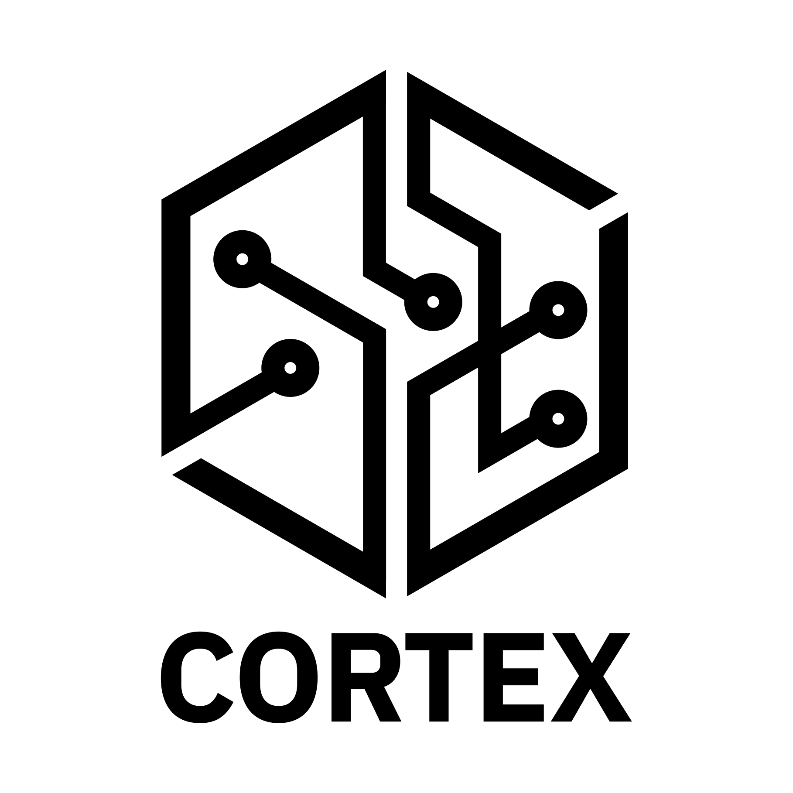

Data ingestion
OpenStack
Prometheus

cortexknowledge / 2.0IPCEI-CIS HACKATHONA reusable data caching and aggregation layer for smart scheduling.
Cortex combines datacenter inventory and telemetry to filter and rank suitable hosts.
Open-source · Modular · Reusable as a Go frameworkTHE FULL SCHEDULING FLOW
expression.runNEW · DYNAMIC EXPRESSIONSCustom knowledge, without a Go plugin.
filter_expressionNEW · DYNAMIC FILTERSFilter candidates, then weigh hosts.
New knowledge + new pipeline constraints. The same Cortex operator.
CUSTOM KNOWLEDGE AND PIPELINE CONSTRAINTS
// Inside your Cortex fork
func (e *MyExtractor) Extract() (
[]plugins.Feature, error,
) {
return e.ExtractSQL(query)
}Custom Go code. Custom image.
import (
"github.com/cobaltcore-dev/cortex/pkg/manager"
_ "example.com/my/extractors"
)
func main() { manager.Run() }Your project. Cortex as a dependency.
map(hypervisors, .ServiceHost)any(contention,
.ComputeHost == host &&
.AvgCPUContention < 50)Knowledge + pipelines. No new Go.
PROMETHEUS METRICS + NOVA HYPERVISORS → HOST CONTENTION → SMART WEIGHING
∞ AUTOPLAY / LOOPnode-a74, 86node-b6, 10node-c38, 46node-acompute-01node-bcompute-02node-ccompute-03spec:
schedulingDomain: nova
recency: 60s
inputs:
- {datasource: nova-hypervisors, var: hypervisors}
- {datasource: host-cpu-metrics, var: metrics}
expression:
run: |
let byHost = groupBy(metrics, .Node);
hypervisors
| filter(len(byHost[.Hostname] ?? []) > 0)
| map(let h = #; {
ComputeHost: h.ServiceHost,
AvgCPUContention:
mean(map(byHost[h.Hostname], .Value)),
MaxCPUContention:
max(map(byHost[h.Hostname], .Value)),
})
| sortBy(.AvgCPUContention)80%8%42%status:
rawLength: 3
raw:
features:
- ComputeHost: compute-02
AvgCPUContention: 8
MaxCPUContention: 10
- ComputeHost: compute-03
AvgCPUContention: 42
MaxCPUContention: 46
- ComputeHost: compute-01
AvgCPUContention: 80
MaxCPUContention: 86Cortex smart weighing can consume these features to prefer a less contended host.
PULL DATABASE ACCESS OUT OF EXTRACTION. KEEP THE OBJECT CONTRACT.
ListAllReplaceAllExistsDatabase access isolated
behind the storage layer.
In-memory object cache.
The same extraction inputs.
Extractors receive typed objects through the API.
Changing the cache does not rewrite the knowledge.
spec:
storage:
type: valkey
valkey:
secretRef:
name: cortex-nova-valkey
namespace: cortexAtomic refreshes. Readers see a complete generation.
Rebuildable cache. Datasources resync after data loss.
Separate feature output. Knowledge stays in Kubernetes status.